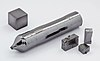

tantalum

Definition: Tantalum is a chemical element with the symbol Ta and atomic number 73. Previously known as tantalium, it is named after Tantalus, a figure in Greek mythology. Tantalum is a very hard, ductile, lustrous, blue-gray transition metal that is highly corrosion-resistant. It is part of the refractory metals group, which are widely used as components of strong high-melting-point alloys. It is a group 5 element, along with vanadium and niobium, and it always occurs in geologic sources together with the chemically similar niobium, mainly in the mineral groups tantalite, columbite and coltan.
Source: Wikipedia
Wikipedia Page
Wikidata Page